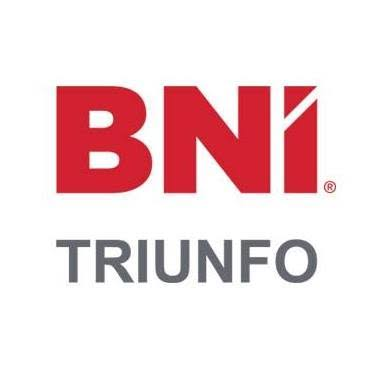
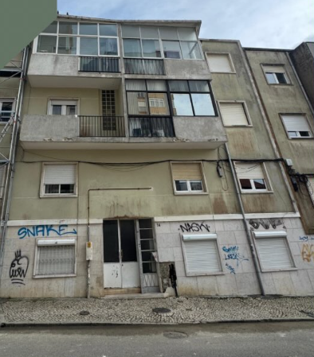
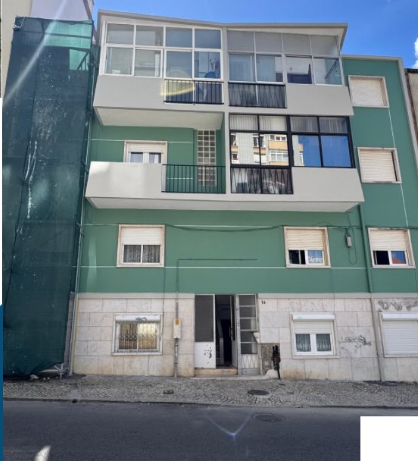
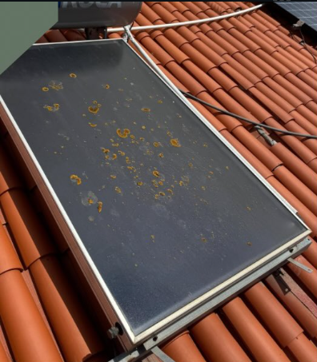
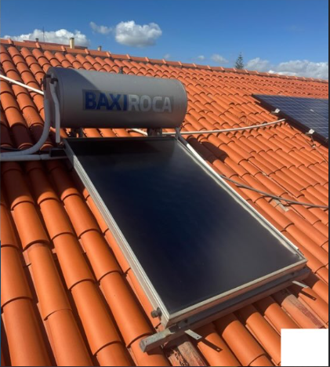
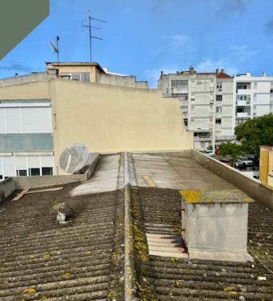
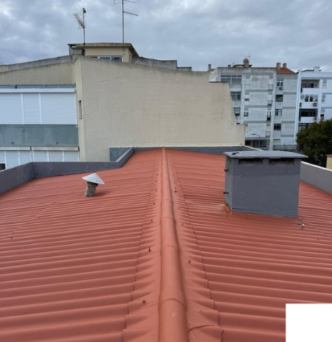
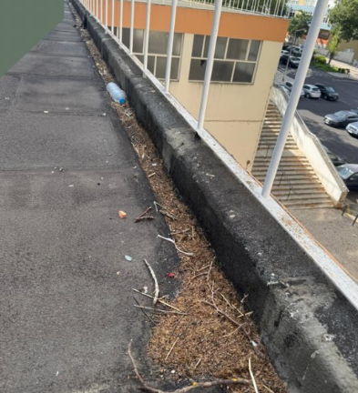
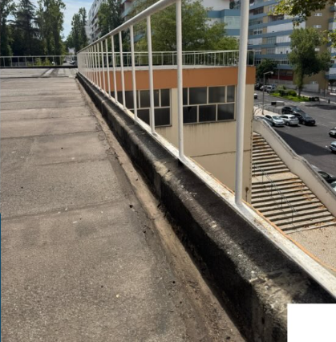

Soluções seguras e eficientes para manutenção, limpeza, impermeabilização e reparação em altura.
A CW Trabalhos Verticais é especializada em intervenções em altura através de técnicas de acesso por cordas, permitindo executar trabalhos de forma segura, eficiente e económica, reduzindo frequentemente a necessidade de andaimes ou plataformas elevatórias. Prestamos serviços de pintura, reabilitação, manutenção, limpeza técnica, impermeabilizações e conservação de edifícios residenciais, comerciais e industriais, adaptando cada solução às necessidades específicas de cada cliente. A segurança é a nossa principal prioridade. Aliamos formação especializada, experiência e profissionalismo para garantir intervenções rigorosas, resultados duradouros e a máxima satisfação dos nossos clientes.
Pintura de fachadas, edifícios, moradias e espaços comerciais, garantindo proteção, valorização estética e maior durabilidade das superfícies.
Intervenções de reabilitação, conservação e manutenção preventiva, preservando a segurança, funcionalidade e valor dos edifícios.
Limpeza profissional e tratamento de fachadas, removendo sujidade, poluição e manchas para recuperar a imagem e prolongar a vida útil dos materiais.
Remoção de musgos, líquenes, resíduos e sujidade acumulada, contribuindo para a conservação e proteção das coberturas.
Limpeza e desobstrução de caleiras, assegurando o correto escoamento da água e ajudando a prevenir danos causados por infiltrações e acumulação de resíduos.
Remoção de poeiras, resíduos e sujidade acumulada, melhorando a eficiência energética e o rendimento dos sistemas fotovoltaicos.
Remoção eficaz de graffitis e outras marcas indesejadas, preservando a integridade e o aspeto original das superfícies.
Limpeza de vidros e superfícies envidraçadas em altura, garantindo máxima transparência e uma imagem cuidada dos edifícios.
Aplicação de soluções de impermeabilização em fachadas, coberturas e terraços para prevenir infiltrações e humidades.

Antes
DepoisIntervenção de pintura e recuperação de fachada, com correção de danos e renovação do acabamento exterior do edifício.

Antes
DepoisLimpeza especializada de painéis solares com remoção de sujidade e resíduos, restaurando a eficiência e o rendimento do sistema fotovoltaico.

Antes
DepoisLimpeza e recuperação de telhados, pintura, tratamento e manutenção preventiva.

Antes
DepoisA limpeza e desobstrução de caleiras ajuda a prevenir infiltrações, danos estruturais e problemas de escoamento da água, contribuindo para a proteção e conservação do edifício.
A segurança é um dos pilares da nossa atividade. Todas as intervenções são realizadas por profissionais qualificados e devidamente preparados para trabalhos em altura, cumprindo rigorosamente as normas e procedimentos aplicáveis. A documentação e certificações poderão ser disponibilizadas mediante solicitação.
Trabalhamos em colaboração com parceiros de confiança, garantindo qualidade, formação contínua e soluções técnicas especializadas.
BNI Triunfo

TFG Training Academy
Velacril